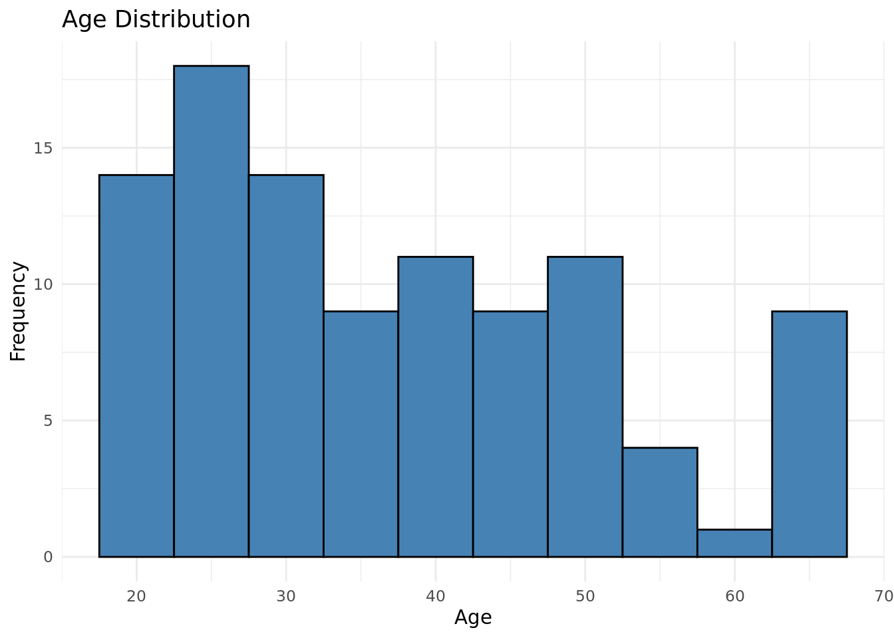
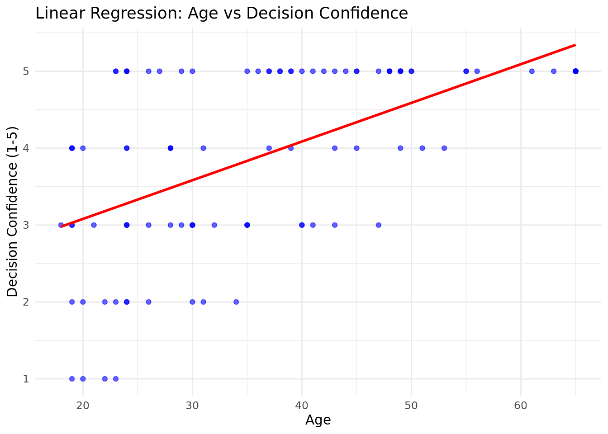

# Create data tables# Create Codebooklibrary(tibble)library(dplyr)library(lubridate)library(forcats)library(knitr)library(kableExtra)library(ggplot2)library(reshape2)# Create Codebookcodebook <-tibble(variable_name =c("age", "gender", "education", "decision_factor", "decision_fatigue", "overanalysis", "decision_style", "cognitive_bias", "decision_strategies", "decision_confidence"),question =c("What is your age?","What is your gender?","What is your education level?","When making a decision, which factor influences you the most?","How often do you experience decision fatigue?","Do you tend to overanalyze decisions before making them?","Which type of decision-making style best describes you?","Have you ever experienced cognitive bias affecting your decisions?","What strategies do you use to improve your decision-making process?","On a scale from 1-5, how confident are you in your decision-making skills?" ))# Generate a synthetic dataset with skewed probabilitiesset.seed(123)n <-100# Skewed age distribution (older individuals more common)age <-round(rexp(n, rate =0.05) +18) # Skewed towards older agesage <-pmin(age, 65) # Cap at 65# Gender distribution (balanced)gender <-sample(c("Male", "Female", "Non-binary", "Prefer not to say"), n, replace =TRUE, prob =c(0.45, 0.45, 0.05, 0.05))# Education levels (higher education more common in older individuals)education <-sample(c("High school or below", "Undergraduate degree", "Graduate degree", "Other"), n, replace =TRUE, prob =c(0.3, 0.4, 0.25, 0.05))# Decision factor (older individuals favor logical reasoning)decision_factor <-sample(c("Logical reasoning", "Emotions and intuition", "Social influences", "Past experiences"), n, replace =TRUE, prob =c(0.4, 0.2, 0.2, 0.2))# Decision fatigue (correlated with age: older individuals experience more fatigue)decision_fatigue_probs <-pmin((age -18) /65, 1)decision_fatigue <-sample(c("Never", "Sometimes", "Often", "Always"), n, replace =TRUE, prob =c(0.2, 0.3, 0.3, 0.2))# Overanalysis (more likely for those with graduate degrees)overanalysis <-sample(c("Yes", "No", "Sometimes"), n, replace =TRUE, prob =c(0.3, 0.4, 0.3))# Decision style (randomly distributed)decision_style <-sample(c("Rational", "Intuitive", "Dependent", "Avoidant"), n, replace =TRUE, prob =c(0.35, 0.25, 0.2, 0.2))# Cognitive bias (slightly more common in younger individuals)cognitive_bias <-sample(c("Yes", "No", "Unsure"), n, replace =TRUE, prob =c(0.5, 0.3, 0.2))# Decision strategies (randomly distributed)decision_strategies <-sample(c("Seeking advice", "Analyzing pros and cons", "Taking time", "Relying on past experiences"), n, replace =TRUE)# Decision confidence (higher age → slightly higher confidence)decision_confidence <-pmin((age -18) %/%10+sample(1:5, n, replace =TRUE), 5)# Create DataFramedata <-tibble(age = age,gender = gender,education = education,decision_factor = decision_factor,decision_fatigue = decision_fatigue,overanalysis = overanalysis,decision_style = decision_style,cognitive_bias = cognitive_bias,decision_strategies = decision_strategies,decision_confidence = decision_confidence)
Questionnaire
The table below provides a codebook for the survey questionnaire, listing variable names and the corresponding questions:
# Age distributionage_plot <-ggplot(data, aes(x = age)) +geom_histogram(binwidth =5, fill ="steelblue", color ="black") +labs(title ="Age Distribution", x ="Age", y ="Frequency") +theme_minimal()age_plot

Linear regression plot
Code
# Linear regression plotregression_plot <-ggplot(data, aes(x = age, y = decision_confidence)) +geom_point(color ="blue", alpha =0.6) +geom_smooth(method ="lm", color ="red", se =FALSE) +labs(title ="Linear Regression: Age vs Decision Confidence",x ="Age",y ="Decision Confidence (1-5)" ) +theme_minimal()regression_plot
`geom_smooth()` using formula = 'y ~ x'

histogram_age_decision_fatigue
Code
# Histogram of age with decision fatigue as fillhistogram_age_decision_fatigue <-ggplot(data, aes(x = age, fill = decision_fatigue)) +geom_histogram(binwidth =5, color ="black", alpha =0.7) +labs(title ="Age Distribution by Decision Fatigue",x ="Age",y ="Frequency",fill ="Decision Fatigue" ) +theme_minimal()histogram_age_decision_fatigue
box_plot_decision_confidence_gender
Code
# Box plot for decision confidence by genderbox_plot_decision_confidence_gender <-ggplot(data, aes(x = gender, y = decision_confidence, fill = gender)) +geom_boxplot(color ="black") +labs(title ="Decision Confidence by Gender",x ="Gender",y ="Decision Confidence" ) +theme_minimal() +theme(axis.text.x =element_text(angle =45, hjust =1), legend.position ="none")box_plot_decision_confidence_gender
Correlation plot
Code
# Compute the correlation matrixcorrelation_matrix <-cor(encoded_data, use ="complete.obs", method ="pearson")# Reshape the correlation matrix for plottingcorrelation_long <- reshape2::melt(correlation_matrix)# Plot the heatmapfull_correlation_heatmap <-ggplot(correlation_long, aes(x = Var1, y = Var2, fill = value)) +geom_tile(color ="white") +scale_fill_gradient2(low ="darkblue", high ="lightblue", mid ="white", midpoint =0, limit =c(-1, 1)) +labs(title ="Full Correlation Heatmap",x ="Variables",y ="Variables",fill ="Correlation" ) +theme_minimal() +theme(axis.text.x =element_text(angle =45, hjust =1))full_correlation_heatmap